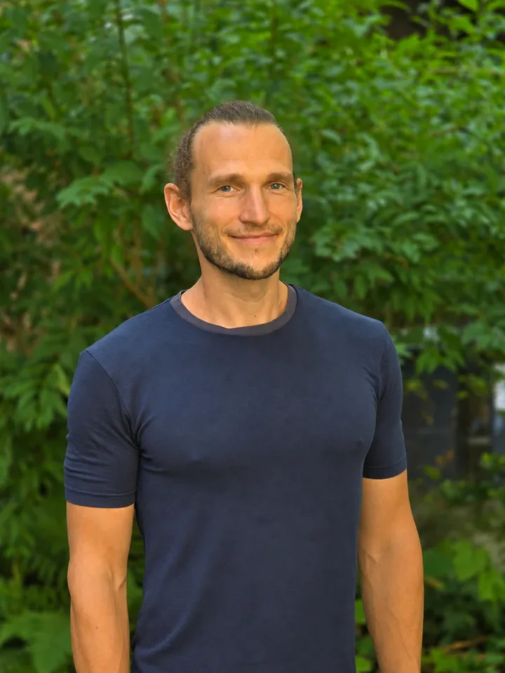

KI, die deine Handschrift trägt. Ich verstärke, was dich auszeichnet —
DSGVO-konform und maßgeschneidert. Für Coaches, Trainer und Mentoren im DACH-Raum.
Eine Einordnung vorweg: KI ist ein Werkzeug.
Nicht die Technik macht die Arbeit wertvoll, sondern der Mensch, der sie einsetzt.
Zwischen den Sitzungen: Was sich wirklich ändert.
Die Sitzungszusammenfassung steht, bevor du das Notizbuch zuklappst.
Die Stilprobe: Lies dich selbst.
Du schickst mir drei deiner Texte und bekommst binnen 48 Stunden zwei Fassungen
zurück: eine generische und eine in deiner Handschrift.
Schritt für Schritt: So gehen wir gemeinsam vor.
Erstgespräch, ehrliche Bestandsaufnahme, dann bauen wir. Jeder Schritt entscheidet
über den nächsten.
Wer mit dir arbeitet: Drei Welten, ein Blick.
Mentaltrainer, Wirtschaftsingenieur, TÜV-geprüfter KI-Experte. Ich verstehe die
innere Welt deiner Arbeit, das Denken in Abläufen dahinter und die KI-Werkzeuge,
die beides verbinden.
Wenn es passt: Lass uns 30 Minuten reden.
Kostenfrei und ohne Verpflichtung. Wir klären auf Augenhöhe, ob das zueinander passt.
KI, die deine Handschrift trägt. Ich verstärke, was dich auszeichnet — maßgeschneidert
und auf deine Praxis zugeschnitten.
Meine Mission ist, Menschen zu unterstützen, die anderen helfen. Coaches, Trainer,
Mentoren: Ihr leistet eine Arbeit, die zählt. Ich sorge dafür, dass die Technik euch
dient und Zeit zurückgibt. So habt ihr mehr Raum für das Wesentliche.
Wofür die drei Zusagen stehen
EU-gehostet. Deine Daten und die deiner Klientinnen und Klienten
bleiben im europäischen Rechtsraum.
TÜV-geprüft. Geprüfte Qualifikation „Manager für angewandte
KI-Transformation“, TÜV Rheinland.
Deine Daten DSGVO-konform. Sobald personenbezogene Daten im Spiel
sind, deine oder die deiner Klientinnen und Klienten, wird nach DSGVO und EU AI Act
gebaut: EU-Hosting, Auftragsverarbeitung und auf Wunsch KI-Modelle, die offline nur
bei dir laufen.
Mein Standort ist Freiburg im Breisgau. Ich arbeite im DACH-Raum, persönlich und aus
der Ferne.
Eine Einordnung vorweg
KI ist ein Werkzeug.
Was wir daraus machen und wofür wir es einsetzen, liegt in unserer Verantwortung, so wie
bei jedem Werkzeug. Wir können KI nutzen, um das Positive zu verstärken. Wir können ihr
unsere Werte beibringen, unsere Sichtweisen, unsere Sprache.
Meine Grundwerte, wenn ich mit KI arbeite
Die KI ersetzt keine echte Beziehung. Begegnung bleibt menschlich.
Ich baue für dich, nicht für die Masse. Jeder Aufbau wird auf deine Methode und
deinen Stil zugeschnitten.
Klientinnen und Klienten wissen immer, wo KI eingesetzt wird.
Sensible Daten werden geschützt. EU-Hosting, Auftragsverarbeitungsverträge und
lokale KI-Modelle bei Bedarf.
Du bleibst Entscheider. KI macht Vorschläge, du wählst aus. Nichts geht raus, ohne
dass du es gesehen hast.
Deine Stimme und deine Methode bleiben. Die KI verstärkt sie.
Deine Woche, zwei Fassungen
Was sich wirklich ändert.
Heute
Sitzungsnotizen liegen verstreut auf Zetteln, in Notion, in Sprachnachrichten.
Das Nachfassen bei deiner Klientin nimmst du dir für heute Abend vor, schon zum
dritten Mal.
Für Social Media fehlt die Zeit — dein letzter Post ist Wochen her.
Morgen
Die Sitzungszusammenfassung steht, bevor du das Notizbuch zuklappst.
Das Nachfassen geht raus, in deiner Sprache.
Aus einem Gedanken deiner Woche wird Content für die nächsten Wochen — auf jeder
Plattform, in deiner Stimme.
Du bekommst keine Werkzeug-Liste und keinen Online-Kurs. Du bekommst eine Begleitung, in
der wir gemeinsam herausarbeiten, wo KI in deiner Arbeit Substanz hat. Genau dort setzen
wir an.
Die Stilprobe
Lies dich selbst.
Du musst mir nichts glauben. Schick mir drei deiner Texte, und du bekommst binnen
48 Stunden einen neuen Entwurf in zwei Fassungen zurück: einmal generisch, einmal in
deiner Handschrift. Dazu drei Beobachtungen zu deiner Sprache. Kostenlos, ohne Haken.
Ein Beispiel für den Unterschied
Fassung A, ohne Handschrift. „Pausen werden oft unterschätzt. Dabei
zeigen Studien, dass regelmäßige Auszeiten die Leistungsfähigkeit steigern. Wer bewusst
innehält, arbeitet danach fokussierter und trifft bessere Entscheidungen. Deshalb gilt:
Plane deine Pausen genauso sorgfältig wie deine Termine.“
Fassung B, deine Handschrift. „Vielleicht kennst du das: Der Kalender
ist voll, und ausgerechnet die Pause fühlt sich an wie Drückebergerei. Ist sie nicht.
Eine Pause ist kein Stillstand, sondern der Moment, in dem deine Arbeit sich setzt.
Du darfst anhalten.“
Das Merkmal in diesem Beispiel: die kurzen Schlusssätze. Genau solche Eigenheiten suche
ich in deinen Texten — und schreibe sie nicht glatt.
Wir lernen uns kennen und gucken, ob eine Zusammenarbeit sinnvoll ist. Du erzählst mir,
wo dir im Alltag Zeit und Ruhe verloren gehen. Ich sage offen, was sinnvoll ist und was
nicht. Kein Verkaufsgespräch, keine Folien.
Schritt 2 — KI-Praxis-Check
600 €, voll anrechenbar
Du weißt noch nicht genau, was du willst? Ich schaue mir dein
bisheriges Vorgehen und deine Methoden genau an. Du bekommst eine ehrliche
Orientierung, wo KI dich wirklich entlastet und wo deine Werkzeuge schon reichen.
Gespräch von 60 bis 120 Minuten
schriftlicher Report
drei bis fünf priorisierte Hebel mit konkreten Empfehlungen
Bewertung deiner Werkzeuge auf DSGVO und EU AI Act
Du weißt schon genau, was du willst? Dann wird der Check kein Suchen,
sondern ein Prüfen: Was genau ist deine Vorstellung? Ist sie umsetzbar? Gibt es
sinnvolle Ergänzungen? Passt das Werkzeug zu deiner Praxis, deiner Stimme, deinen
Daten? Was bei einer Kollegin funktioniert, braucht bei dir einen eigenen Zuschnitt —
genau den legen wir fest.
In beiden Fällen gilt: Entscheidest du dich für eine Umsetzung, rechne
ich die 600 € vollständig an. Der Check kostet dich dann nichts extra.
Schritt 3 — Umsetzung
ab 1.000 €
Was sich im Praxis-Check gezeigt hat, baue ich. Fertig eingerichtet, falls sinnvoll
DSGVO-konform und in deiner Handschrift.
Das könnte z. B. sein:
Ein automatisiertes Marketing-/Content-Tool (ab 2.500 €), das aus einem einzigen
Text oder Video Beiträge in deiner Stimme für mehrere Wochen und verschiedene
Plattformen und Formate erstellt. Auf Wunsch alles nach einem vorher mit der KI
individuell erarbeiteten Plan.
Sitzungs-Nachbereitung und Begleitung zwischen den Sitzungen (ab 1.000 €). Eine
Zusammenfassung nach jeder Sitzung, ohne dass du tippst. Zusätzlich für deine
Klientinnen und Klienten Reflexionsfragen, Übungen oder Erinnerungen zwischen den
Sitzungen, um eure Arbeit noch nachhaltiger zu gestalten.
Website-Erstellung (ab 1.000 €), die genau deinen Vorstellungen entspricht. Die
technische Hürde, die dich vielleicht schon so lange davon abhält, rauszugehen und
in die Sichtbarkeit zu kommen, nehme ich dir gerne ab.
und vieles mehr — oder was du sonst für deine Praxis brauchst.
Mehrere Bausteine richte ich als ein stimmiges Ganzes ein — das ist günstiger als die
Summe. Welcher Zuschnitt für dich passt, klären wir im Praxis-Check.
Schritt 4 — Resonanzraum, optional
ab 300 € pro Monat, ab dem dritten Monat
Deine Werkzeuge bleiben auf dem Stand: neue Modelle, bessere Vorlagen.
Ich halte dich auf dem Laufenden, wenn sich bei DSGVO oder EU AI Act etwas ändert,
das dich betrifft. Auf verständliche Weise erklärt, nicht als Paragrafen-Flut.
Wenn Bedarf ist, begleite ich dich 1:1 bei deinen Tools und Methoden.
Ohne diese Anbindung bleibt deine Umsetzung trotzdem stabil — du bist nicht abhängig.
Ich baue deine Tools von Anfang an so, dass sie zuverlässig, langfristig und nachhaltig
deine Arbeit unterstützen.

Wer mit dir arbeitet
Drei Welten, ein Blick.
Gabriel Chimento, Gründer von JGC Lumen. Ich verstehe die innere Welt
deiner Arbeit, das Denken in Abläufen dahinter und die KI-Werkzeuge, die beides
verbinden.
Coach-Hintergrund
Ausgebildeter Mentaltrainer und Meditationskursleiter, in Ausbildung als Fitnesstrainer.
Ich kenne die innere Welt deiner Arbeit aus eigener Anschauung und Erfahrung.
Wirtschaftsingenieur
Master in Wirtschaftsingenieurwesen. Mein Beruf ist es, zwischen Welten zu übersetzen —
Technik, Wirtschaft, Mensch. Ich denke in Abläufen und Prozessen, ohne den Menschen
darin aus den Augen zu verlieren.
TÜV-geprüfter KI-Experte
Geprüfte Qualifikation „Manager für angewandte KI-Transformation“ des TÜV Rheinland.
Ich habe eigene KI-Anwendungen entwickelt und in Praxen anderer eingebaut. KI ist nicht
mein Hobby, sondern meine tägliche Arbeit, die mich fasziniert. Mich begeistert immer
wieder aufs Neue, was für Werkzeuge möglich sind und wie die Grenzen des Umsetzbaren
immer weiter ausgebaut werden.
Prüfzeichen bei Certipedia — externer Link zur Datenbank des
TÜV Rheinland.
Mein Standort ist Freiburg im Breisgau. Ich arbeite im DACH-Raum, persönlich und aus
der Ferne.
Wie geht es weiter?
Schreib mir einfach.
Ob du am Anfang deines Weges stehst oder schon mittendrin — wenn du das Gefühl hast,
dass KI dir wieder mehr Raum für das Wesentliche geben könnte, um mehr Menschen zu
erreichen und ihnen noch mehr zu helfen, dann lass uns sprechen. Ein offenes Gespräch,
kostenfrei, ohne Haken. Ich freu mich auf dich!
Wähle möglichst drei Texte aus einem Ton, geschrieben für dieselbe Zielgruppe — zum
Beispiel drei LinkedIn-Beiträge oder drei Newsletter-Ausgaben. Du bekommst binnen
48 Stunden einen neuen Entwurf in zwei Fassungen zurück, dazu drei Beobachtungen zu
deiner Sprache.
15 Proben im Monat – mehr gibt
die Handarbeit nicht her.
Der Monat ist voll.
15 Proben sind vergeben – mehr gibt die Handarbeit nicht her. Trag dich ein, und du
bekommst den ersten freien Platz im nächsten
Monat, bevor er auf der Website erscheint.
Die Stilprobe macht gerade eine kurze Pause – zum Beispiel, weil ich unterwegs bin.
Schau in ein paar Tagen wieder vorbei, dann geht es hier weiter.
Erstgespräch
Lass uns 30 Minuten reden.
Du nennst mir deine Zeitfenster, ich gleiche sie mit meiner Woche ab. Kostenfrei und
ohne Verpflichtung. Lieber direkt per Mail? Schreib mir an
kontakt@jgc-lumen.de.
Was du sonst noch wissen willst
Häufige Fragen.
01 Wie läuft die Zusammenarbeit ab?
Zuerst ein kostenfreies Erstgespräch von etwa 30 Minuten: Wir schauen, wo du
stehst und ob eine Zusammenarbeit sinnvoll wäre. Dann der Praxis-Check für
600 Euro, aus dem du binnen einer Woche einen schriftlichen Report mit drei bis
fünf priorisierten Hebeln bekommst. Danach entscheidest du in Ruhe. Gehst du in
die Umsetzung, rechne ich die 600 Euro vollständig an.
02 Was ist die Stilprobe?
Der Schritt vor dem ersten Gespräch, für alle, die erst sehen wollen, wie die
KI in deinem Sprachstil schreibt. Du schickst mir drei eigene Texte und
bekommst binnen 48 Stunden einen Entwurf in zwei Fassungen zurück: einmal
generisch, einmal in deiner Handschrift, dazu drei Beobachtungen zu deiner
Sprache.
03 Ich weiß schon genau, was ich will. Brauche ich den Praxis-Check trotzdem?
Ja, und er sieht dann anders aus. Statt breit zu suchen, prüfe ich gezielt:
Sitzt dein Wunsch auf einem echten Engpass? Passt das Werkzeug zu deiner Praxis,
deiner Stimme, deinen Daten? Was bei einer Kollegin trägt, braucht bei dir einen
eigenen Zuschnitt. Zeigt die Prüfung, dass dein Wunsch nicht trägt, sage ich dir
das offen, bevor du investierst.
04 Wie hältst du es mit DSGVO und EU AI Act?
Beides ist Fundament, kein Anhang. Seit Februar 2025 verpflichtet der EU AI Act
jeden, der KI in seiner Arbeit einsetzt, zur KI-Kompetenz. Jede Umsetzung kommt
deshalb mit EU-gehosteten Modellen als Standard, mit Auftragsverarbeitungsverträgen
als Basis und mit einer Schulung, die deine Pflicht aus Artikel 4 abdeckt. Bei
Doppelqualifikationen wie Heilpraktikerin oder Therapeutin greift zusätzlich
Paragraf 203 StGB, das beraten wir individuell.
Der Maßstab sind dabei die Daten, nicht das Etikett: Wo personenbezogene Daten
fließen, gilt die Regel ohne Ausnahme — in allem, was ich für dich baue und was
anschließend bei dir läuft. Für meine eigene Werkstatt, also Entwürfe, Code und
Textarbeit ohne Personenbezug, nehme ich das Werkzeug, das die beste Arbeit macht.
Deine Daten sehen diese Werkzeuge nicht.
05 Was passiert mit den Aufnahmen und Daten meiner Klientinnen und Klienten?
Sitzungs-Transkriptionen laufen über lokal gehostetes Whisper, auf einem Server,
den ich für dich einrichte. Die Aufnahmen verlassen den europäischen Rechtsraum
nie. Bei besonders sensiblen Inhalten arbeiten wir mit offenen Modellen komplett
auf deiner eigenen Infrastruktur. Deine Klientinnen und Klienten werden vorab
informiert, dass KI in der Nachbereitung im Einsatz ist.
06 Wie viel Zeit muss ich selbst investieren?
Im Praxis-Check zwei bis drei Stunden insgesamt, Gespräch und Lektüre des
Reports. In der Umsetzung hängt es vom Umfang ab: ein einzelner Baustein braucht
wenig, mehrere über einige Wochen etwa vier bis sechs Stunden pro Woche, vor
allem am Anfang. Danach wird es deutlich weniger.
07 Funktioniert das auch, wenn ich noch kein Buch und kein Programm habe?
Für Praxis-Check und Umsetzung reichen deine bisherigen Texte, Posts,
Podcast-Folgen und Sitzungsnotizen. Ein fertiges Buch brauchst du nicht. Wenn
deine Methode noch gar nicht steht, ist die Umsetzung eher früh, dann hilft erst
einmal Klarheit über dein Angebot.
08 Was unterscheidet das von einem Online-Kurs?
Ich liefere keine Lektionen, sondern fertige Abläufe in deine Praxis. Du musst
nichts lernen, was du nicht willst. Die Schulung betrifft die Bedienung deines
konkreten Aufbaus, nicht KI im Allgemeinen. Wenn du einen Kurs willst, gibt es
gute Anbieter dafür.
09 Was ist, wenn die Werkzeuge sich in einem Jahr geändert haben?
Werkzeuge ändern sich, das gehört dazu. Mein Aufbau ist so angelegt, dass die
Logik bleibt, auch wenn einzelne Teile getauscht werden. Im optionalen
Resonanzraum ab 300 Euro pro Monat bekommst du laufende Aktualisierungen und
Begleitung bei Bedarf. Ohne diese Anbindung bleibt deine Umsetzung trotzdem
stabil, du bist nicht abhängig.
10 Brauche ich eine technische Vorbildung?
Nein. Wenn du E-Mail, Notion oder ein Buchungswerkzeug bedienen kannst, reicht
das. Die Schulung am Ende deckt genau ab, was du brauchst, um deinen Aufbau zu
pflegen.
11 Geht das auch, wenn ich nicht in Freiburg bin?
Ja. Die meiste Arbeit läuft aus der Ferne, mit regelmäßigen Videogesprächen.
Wenn du in Freiburg oder Umgebung bist und Wert auf persönliche Treffen legst,
machen wir das gerne. Ich arbeite mit Coaches und Trainern im gesamten
DACH-Raum.